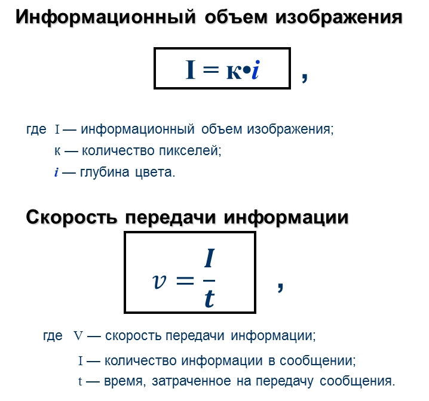

Представление и измерение графической информации
Решение задач
Цели
- Обобщить знания учащихся о единицах измерения информации
- Разобрать алгоритмы кодирования различных видов информация в компьютере
- Сформировать у учащихся представление об универсальности двоичного кодирования
Инструменты:
- ОС Windows
- Браузер
- Калькулятор
Формы представления и преобразования графической информации
Растровая и векторная графика, сравнительная характеристика
| Растровая графика | Векторная графика | |
| 1. Изображение формируется (создается) из... | ||
| 2. Основным элементом изображения (рисунка) является... (дать определение) | ||
| 3. Основные характеристики | ||
| 4. Достоинства и недостатки изображений | ||
| 5. Графические редакторы и их возможности | ||
| 6. Форматы графических файлов |
Задание 2. Оформите в конспект

Задание 3. Найдите на компьютере программу FastStone Image Viewer. Запустите её.
Войдите в меню, выберит пункт цвета из открывшегося списка выберите "Уменьшить количесвто цветов", посмотрите, как меняется изображение при различном кодировании.
Задание 4. Решите задачи
1.Черно-белое растровое изображение имеет размер 10 х 10 точек. Какой информационный объем имеет изображение?
2. Цветное (256 цветов) растровое изображение имеет размер 10 х 10 точек. Какой информационный объем имеет изображение?
3. Современный монитор позволяет получать на экране 16 777 216 различных цветов. Сколько знаков отводится на двоичный код каждого пикселя?
4. Какой объем видеопамяти необходим для хранения двух страниц изображения при условии, что разрешающая способность дисплея равна 640 х 350 пикселей, а количество используемых цветов – 16?
5. Запишите двоичный код красного цвета (числовой код определите в спектре в любой программе, например Paint или MSWord) На рисунке вы видите числовой код светло зелёного цвета 29, 227, 90
6. Какое количество цветов использовано для печати изображений (глубина цвета указана под фото)
7. Определите, во сколько раз уменьшится информационный объём графического файла, если в процессе преобразования растрового графического изображения количество цветов уменьшилось с 65536 до 256?(в 2 раза, в 4 раза или в 8 раз) Ответ обоснуйте!
8. Какой объём памяти необходим для хранения изображения на экране монитора разрешением 800x600 точек при глубине цвета 24 бит? Ответ записать в Мбайтах
9. Сколько места в памяти
надо выделить
для хранения 16-цветного рисунка размером 32 на 64
пикселя? Ответ
записать в Кбайтах.
10. Экран компьютера может
работать в
различных режимах, которые отличаются разрешающей способностью и
количеством возможных цветов каждой точки. Заполните таблицу задание по
вариантам (1 вариант четные номера в журнале):
|
Количество точек |
Количество цветов |
Количество бит на точку |
Информационный объём экрана |
|||||
|
по горизонтали |
по вертикали |
всего |
бит |
Кб |
Кбайт |
|||
|
1 вариант |
640 |
480 |
? |
2(21 =2) |
? |
? |
? |
? |
|
1024 |
768 |
? |
256(28 = 256) |
? |
? |
? |
? |
|
|
2 вариант |
320 |
200 |
? |
16(24 = 16) |
? |
? |
? |
? |
|
1280 |
1024 |
? |
256(28 = 256) |
? |
? |
? |
? |
|
|
Прверьте правильность решения задач Проверочная работа Пройдите тест: Измерение и кодирование графической информации. Выполнение заданий по решению задач на знание кодирования графических изображений, решение запишите в конспект; Сделайте скринн (PrtScr) экрана с результатом прохождения
теста, вставьте его в документ Word, сохраните документ в папке, с
номером своей группы. Покажите файл со скрином преподавателю с результатом прохождения
теста, вставьте его в документ Word, сохраните документ в папке, с
номером своей группы. Покажите файл со скрином преподавателю
Дополнительное задание Известно,
что видеопамять компьютера имеет объем 512 Кбайт. Разрешающая
способность экрана 640 на 200. Сколько страниц экрана одновременно
разместится в видеопамяти при палитре Решение. Другие варианты
решения, без привязки к цветовому составу изображения - архивацию: |
| Соответствие пикселей информационному объему |
10